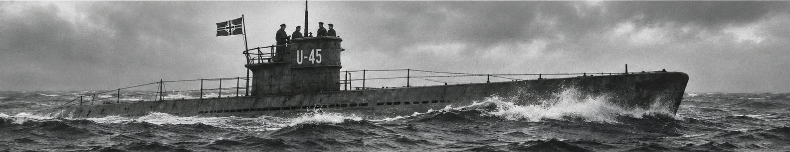
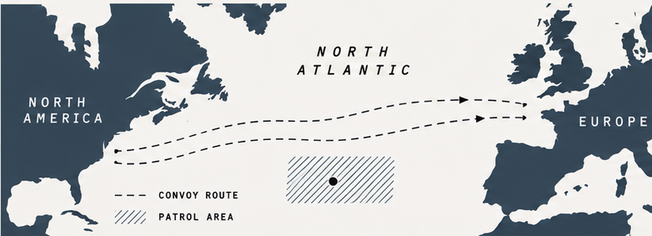

U-Boat
CK MY APPS
THE BATTLE OF THE ATLANTIC · 1939—1945 · U-667 / TYPE VIIC


NORTH ATLANTIC, 1939
The Atlantic is at war. Allied convoys carry supplies across dark waters. Escorts and patrol aircraft scour the sea for submarines.
You command the U-667, a Type VIIC submarine of the German Navy.
Find the convoy. Evade the destroyers. Make every torpedo count.
Ten patrols. If your boat survives, the campaign ends in 1945.
Convoy designations and historical engagements are real; the participation of U-667, combat outcomes and tactical map are fictionalised for gameplay.
Tactical chart. Unknown waters conceal enemy vessels.
MISSION HISTORY
PATROL
Tap an arrow to move.
SONAR / CONTACTS
No contacts reported.